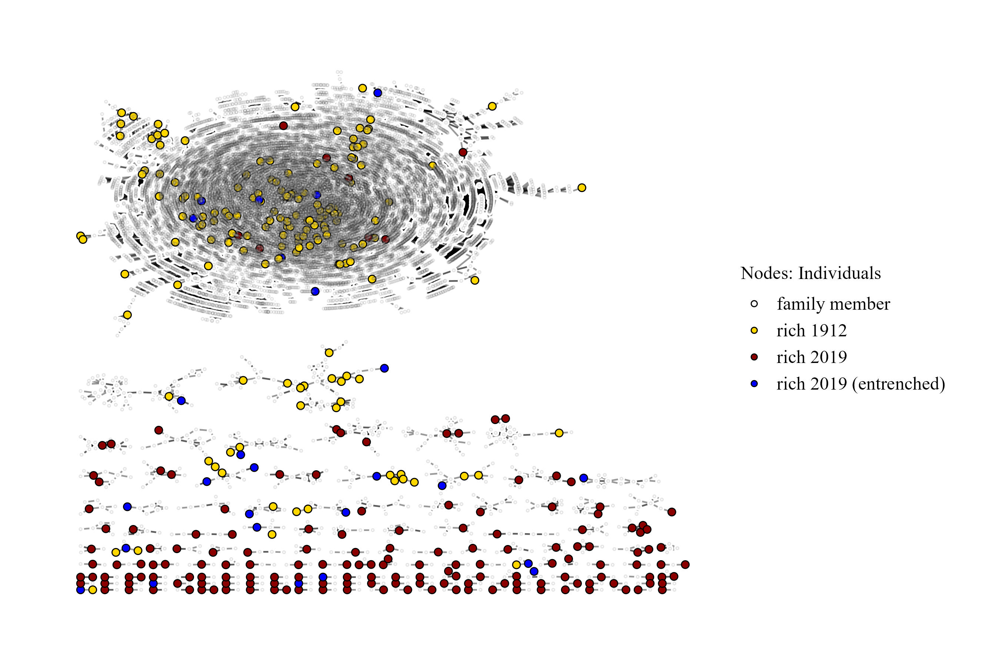

Frühjahrstagung der DGS-Sektion
‘Soziale Ungleichheit und Sozialstrukturanalyse’
23. März 2023
Daria Tisch¹ & Emma Ischinky¹
¹Max Planck Institute for the Study of Societies
Vermögensungleichheit auf hohem Niveau (Albers, Bartels, and Schularick 2022; Piketty 2014)
Vermögen sind stark konzentriert in den Händen weniger Familien
Kleine Gruppe, die überproportional viel politische und ökonomische Macht und sozialen Einfluss ausüben kann (Keister, Lee, and Yavorsky 2021)
Sozialer Hintergrund dieser Gruppe
Soziale Mobilität innerhalb dieser Gruppe?
Was sind die historischen Ursprünge heutiger top Vermögen in Deutschland?
Die Vorfahren von 8% der heutigen Top-Vermögen gehörten bereits 1913 zu den Reichsten (= Verwurzelte Vermögen)
Verwurzelte Vermögen N = 82 Shares |
Andere Vermögen N= 950 Shares |
|
|---|---|---|
| Adel | 35% | 1% |
| Unternehmen verkauft | 24% | 18% |
| Familienstiftung | 5% | 7% |
| Unternehmensstiftung | 1% | 3% |

→ Schumpeter’s Hotel Metapher trifft nicht auf Deutschlands oberste Vermögensschicht zu!
Kontakt: tisch@mpifg.de | dariatisch.github.io